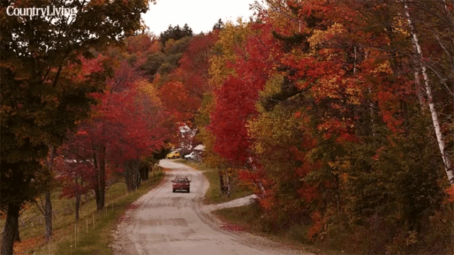
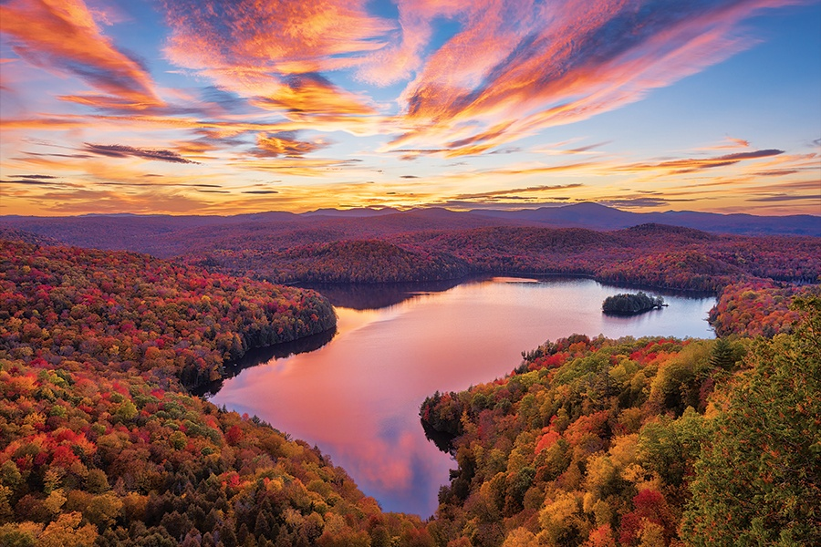
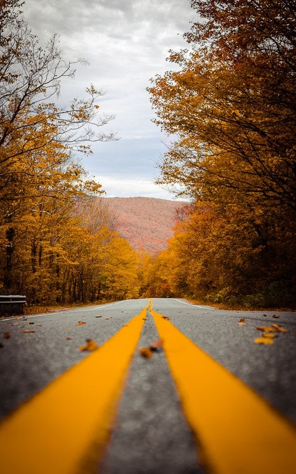
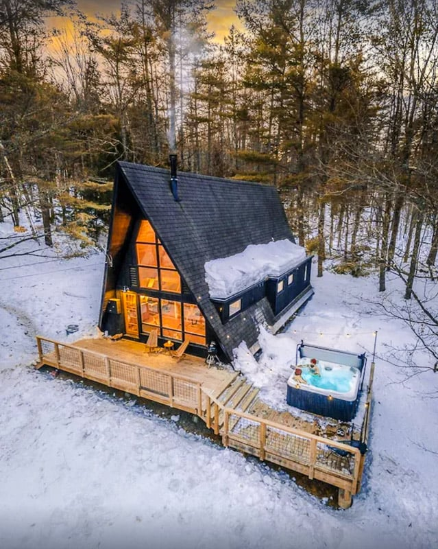
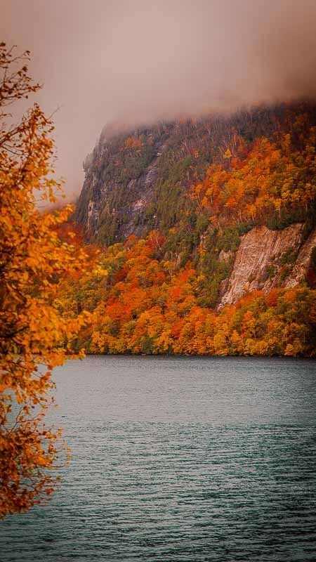
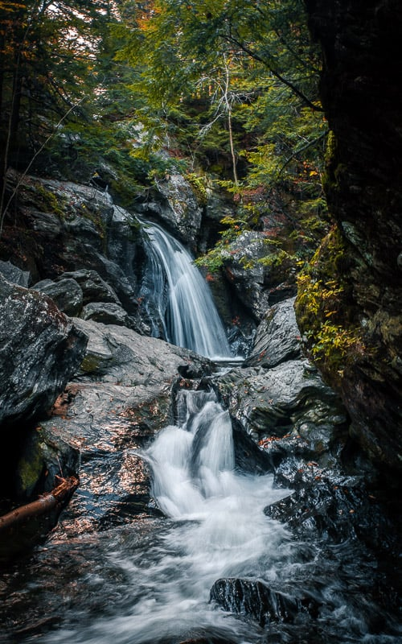
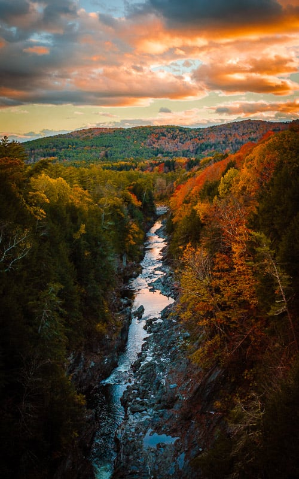

The 'Horseshoe'
Niagara Falls

Niagara Falls is located on the border between Canada and the United States. Connecting Lake Erie and Lake Ontario, Niagara Falls has the highest flow rate of any waterfall in North America.

Niagara Falls draws in thousands of visitors every year, and for good reason. As such, there are numerous things that you can see while you visit the falls, and it is very easy to make a full trip out of seeing this wonderful sight.
Geographical Location:
North America
Photo Gallery


A rainbow in Niagara Falls

A sunset at Niagara Falls

A colorful view of Niagara Falls

A distant look at Niagara Falls
Steven Jacovitch
Boulder Colorado

Boulder, Colorado is where the Buffalo Roam. It is home to my Alma Mater, the University of Colorado! There are many hiking locations near the city center, most notably Chautauqua Park.

Boulder, Colorado is a small city of about 104,000 people, about a quarter of which are students that attend the University of Colorado. They city is a vibrant start-up hub that is a center for technology and innovation much like Ann Arbor is.
Geographical Location:
North America
Photo Gallery

Campus during winter

Summer time flatirons

Pearl Street Mall

Varsity Pond

Winter Flatirons
No name in Google Doc
Vermont

Vermont, located in the northeastern United States, is a state renowned for its natural beauty and charm. It is known for its breathtaking mountain ranges, serene lakes, dense forests, and captivating rural landscapes. The Green Mountain National Forest covers much of the state, offering abundant outdoor activities and adventure opportunities. In winter, skiers flock here to enjoy snow-covered slopes, while summer beckons hikers, cyclists, and campers to explore its pristine wilderness. Furthermore, Vermont boasts picturesque small towns with a countryside vibe and a unique farming landscape, making it a destination where rural charm thrives. Whether you're seeking the beauty of nature or embracing a tranquil way of life, Vermont is a place worth visiting.

Vermont is celebrated not only for its natural beauty but also for its distinctive culture and historical heritage. The state, as the 14th to join the United States, is considered one of the birthplaces of the American Revolution, and as a result, it is rich in historical landmarks and monuments. Additionally, Vermont takes pride in its emphasis on environmentalism and sustainable living, with communities often encouraging organic farming, farmers' markets, and craftsmanship. Furthermore, the state is well-known for its vibrant arts and music culture, offering a plethora of cultural experiences with various music festivals, art galleries, and performing arts venues. In essence, Vermont is a place where the blend of natural splendor, historical legacy, and cultural vibrancy attracts people of diverse interests and backgrounds to explore its wonders. For details, check 39 Best Things to do in Vermont: The Ultimate VT Bucket List - Global Viewpoint (myglobalviewpoint.com)
Geographical Location:
North America
Photo Gallery

Chasing the fall colors is a must when you’re in... Vermont. Peak foliage typically occurs between late-September and mid-October, but can vary considerably between different geographies and elevations across the state. This makes leaf peeping one of the top Vermont fall activities.

It would be a crime to visit Vermont and... not stay in a cozy log cabin. From modern A-Frames to rustic chalets, this state offers no shortage of unique accommodations with mountain views and plenty of woods to go around.

Located in Northeast Kingdom, Lake Willoughby is my favorite lake... in the state of Vermont. It's surrounded by Willoughby State Forest, which looks especially spectacular during the peak fall foliage season.

Though Vermont is no Iceland, you’ll still find plenty of... waterfalls worth chasing. The best time to see the waterfalls is in the late spring as the snow melts. Some of the most breathtaking waterfalls in VT include Bingham Falls near Mount Mansfield, Lye Brook Falls in Manchester, and Moss Glen Falls in Granville.

The best Vermont activities are often tucked in nature, and... there’s nothing more unique and iconic than Quechee Gorge. This natural treasure is located in Quechee State Park near the VT-NH border. Hike down to the gorge if you wish, but the best views are from the bridge, just a two-minute walk from the parking lot.
Shaoze Yang & Yan Lu